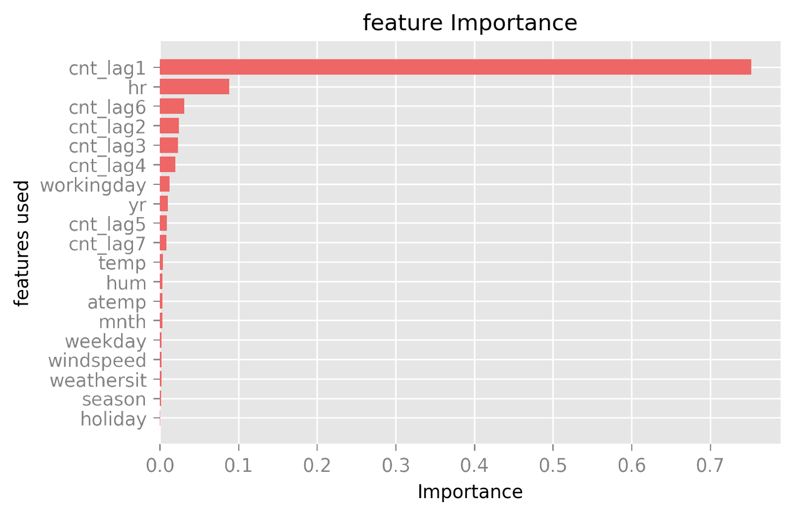
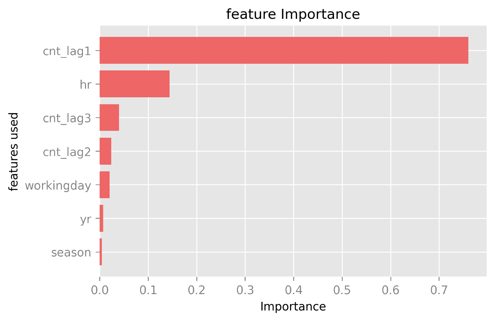

Part 1: Building the Model¶
Random Forest¶
In this package forecast is performed using Random Forest Regression, an ensemble learning method, combining multiple trees and using the mean of their predicted value as the ultimate prediction to solve complex problems. Random Forest is a bagging algorithm and therefore, it reduces the chances of overfitting. In every random forest tree, a subset of features is used for prediction in each node and this number could be modified in the hyperparameter tuning phase.
The reason for choosing Random Forest is that it has proved to be efficient in data with different types of features. One crucial and favorable aspect about Random Forest is that it does not need any encoding in the case of categorical or unordered features. As a matter of fact, some studies have shown that random forest does not perform well with one-hot encoding due to data sparsity. In addition, the random forest can produce acceptable results without the need for extensive hyperparameter tuning.
Finally, the random forest can also help us find feature importances and improve the model based on this information.
In this package, the cross-validation is inactive by default, since it would slow down the algorithm due to heavy computations. . However, the user is free to set the parameter to True and perform hyperparameter tuning each time. Random grid search is used to this end (Please see the documentation for the modules)
Two built models are compared in the following section. The first model is built with 7 lags (The target feature value of the seven previous days) and all possible features. The model is created with a mean absolute percentage error of 26.13%, and a root mean squared of 35.26, and a scatter index of 0.19.
{kind=link}
Due to unimportance of many features, they are omitted and the new model is run with the following results. The model is created with a mean absolute percentage error of 24.77%, and a root mean squared of 36.15, and a scatter index of 0.19.
{kind=link}
Improvements and TODOs¶
Improvement in hyperparameter tuning could be made by expanding the grids and the number of random sets to be tested.
An increase in the number of trees could improve model performance.
The tests in this package are not sufficient, they are only samples and need to be extended.